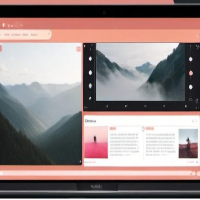

AI Movie Worker is a desktop application designed to enable users to create their own short films without requiring advanced video-making expertise. Targeting beginners with a foundational understanding of film-making, particularly those in related fields, the app simplifies the video production process. Read more...